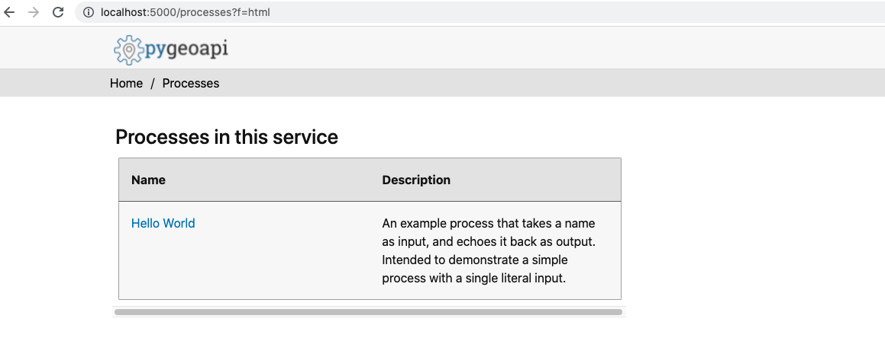
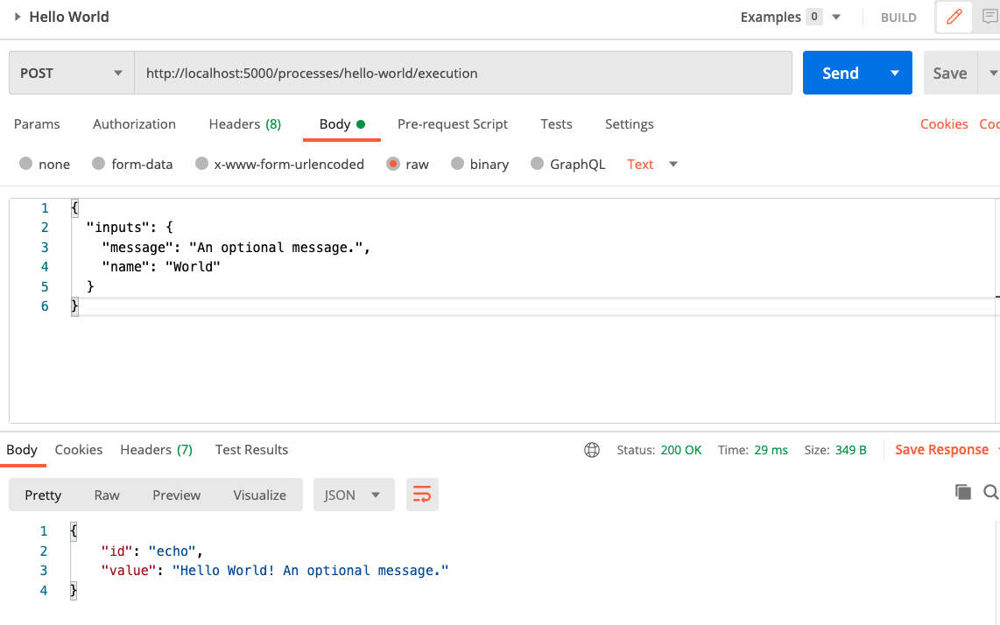
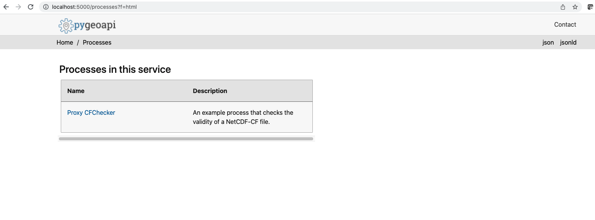
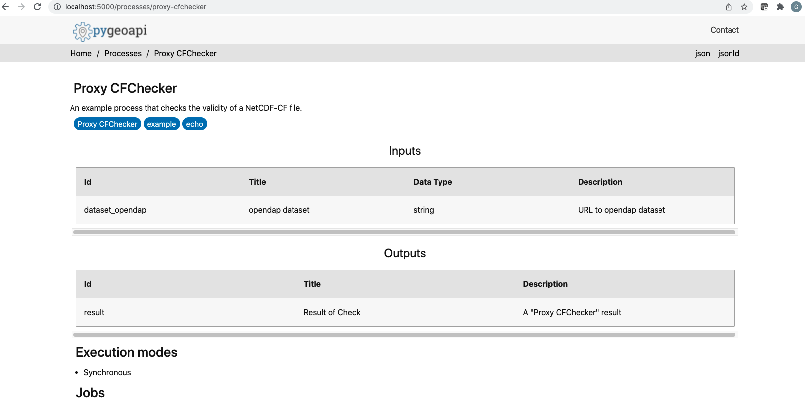

Enhancing WPS implementations with OGC API - Processes interfaces¶
The WPS Standard provides a standard interface that simplifies the task of making simple or complex computational geospatial processing services accessible via web services. While the WPS standard was designed with spatial processing in mind, the standard could also be used to readily insert non-spatial processing tasks into a web services environment.
The OGC API — Processes Standard is a newer and more modern way of programming and interacting with resources over the web while allowing better integration into existing software packages. The OGC API — Processes Standard addresses all of the use cases that were addressed by the WPS Standard, while also leveraging the OpenAPI specification and a resource-oriented approach.
Both WPS and OGC API - Processes share the following core concepts:
Process
Input
Output
Both WPS and OGC API - Processes support the following key execution modes:
Synchronous
Asynchronous
Key differences between WPS and OGC API - Processes are in how the interfaces are described:
WPS uses the GetCapabilities operation to retrieve information about the capabilities supported by the server. In contract, OGC API - Processes offers separate paths for the Conformance Declaration, Process List, Jobs List, and API Definition resources together which collectively describe the capabilities and resources offered by the server.
The interface offered by a WPS is documented in the Standards document alone, for human interpretation. In contrast, OGC API - Processes offered both a Standards document (for human interpretation) and an API definition document specified as an OpenAPI definition document (for interpretation by applications).
WPS supports the following input data types as Complex Data, Literal Data, and BoundingBox Data. In contrast, OGC API - Processes supports the following input data types as a simple literal value, an array, a qualified value, a binary value, and a bounding box. Additionally OGC API - Processes supported the follow types of arrays simple literals, embedded arrays, qualified values, binary values, bounding box values, are references to values using links.
An Example of a WPS¶
To explain how a WPS could be extended to support OGC API - Processes by deploying OGC API - Processes implementations alongside the WPS, we present this example which references the CF Checker process. The CF-checker was developed at the Hadley Centre for Climate Prediction and Research, UK Met Office. Development and maintenance for the CF-checker has now been taken over by the NCAS Computational Modelling Services (NCAS-CMS).
An example DescribeProcess request, sent through an HTTP GET operation, for the cfchecker process is shown below.
https://pavics.ouranos.ca/twitcher/ows/proxy/hummingbird/wps?
service=WPS&
version=1.0.0&
request=DescribeProcess&
identifier=cfchecker
An extract from the DescribeProcess response is shown below.
<wps:ProcessDescriptions xmlns:gml="http://www.opengis.net/gml" xmlns:ows="http://www.opengis.net/ows/1.1" xmlns:wps="http://www.opengis.net/wps/1.0.0" xmlns:xlink="http://www.w3.org/1999/xlink" xmlns:xsi="http://www.w3.org/2001/XMLSchema-instance" xsi:schemaLocation="http://www.opengis.net/wps/1.0.0 http://schemas.opengis.net/wps/1.0.0/wpsDescribeProcess_response.xsd" service="WPS" version="1.0.0" xml:lang="en-US">
<ProcessDescription wps:processVersion="3.0.5" storeSupported="true" statusSupported="true">
<ows:Identifier>cfchecker</ows:Identifier>
<ows:Title>CF Checker by CEDA</ows:Title>
<ows:Abstract>The NetCDF Climate Forcast Conventions compliance checker by CEDA. </ows:Abstract>
<DataInputs>
<Input minOccurs="1" maxOccurs="1">
<ows:Identifier>cf_version</ows:Identifier>
<ows:Title>Check against CF version</ows:Title>
<ows:Abstract>Version of CF conventions that the NetCDF file should be check against.</ows:Abstract>
<LiteralData>
<ows:DataType ows:reference="urn:ogc:def:dataType:OGC:1.1:string">string</ows:DataType>
<ows:AllowedValues>
<ows:Value>auto</ows:Value>
<ows:Value>1.6</ows:Value>
<ows:Value>1.5</ows:Value>
<ows:Value>1.4</ows:Value>
<ows:Value>1.3</ows:Value>
<ows:Value>1.2</ows:Value>
<ows:Value>1.1</ows:Value>
<ows:Value>1.0</ows:Value>
</ows:AllowedValues>
<DefaultValue>auto</DefaultValue>
</LiteralData>
</Input>
<Input minOccurs="0" maxOccurs="1024">
<ows:Identifier>dataset</ows:Identifier>
<ows:Title>Dataset</ows:Title>
<ows:Abstract>You may provide a URL or upload a NetCDF file.</ows:Abstract>
<ComplexData>
<Default>
<Format>
<MimeType>application/x-netcdf</MimeType>
</Format>
</Default>
<Supported>
<Format>
<MimeType>application/x-netcdf</MimeType>
</Format>
</Supported>
</ComplexData>
</Input>
<Input minOccurs="0" maxOccurs="1024">
<ows:Identifier>dataset_opendap</ows:Identifier>
<ows:Title>Remote OpenDAP Data URL</ows:Title>
<ows:Abstract>Or provide a remote OpenDAP data URL, for example: http://www.esrl.noaa.gov/psd/thredds/dodsC/Datasets/ncep.reanalysis2.dailyavgs/surface/mslp.2016.nc</ows:Abstract>
<ows:Metadata xlink:href="https://www.iana.org/assignments/media-types/media-types.xhtml" xlink:title="application/x-ogc-dods" xlink:type="simple"/>
<LiteralData>
<ows:DataType ows:reference="urn:ogc:def:dataType:OGC:1.1:string">string</ows:DataType>
<ows:AnyValue/>
</LiteralData>
</Input>
</DataInputs>
<ProcessOutputs>
<Output>
<ows:Identifier>output</ows:Identifier>
<ows:Title>CF Checker Report</ows:Title>
<ows:Abstract>Summary of the CF compliance check</ows:Abstract>
<ComplexOutput>
<Default>
<Format>
<MimeType>text/plain</MimeType>
</Format>
</Default>
<Supported>
<Format>
<MimeType>text/plain</MimeType>
</Format>
</Supported>
</ComplexOutput>
</Output>
</ProcessOutputs>
</ProcessDescription>
</wps:ProcessDescriptions>
An example Execute request, sent through an HTTP GET operation, for the cfchecker process is shown below.
https://pavics.ouranos.ca/twitcher/ows/proxy/hummingbird/wps?
service=WPS&
version=1.0.0&
request=Execute&
identifier=cfchecker&
DataInputs=dataset_opendap=http://www.esrl.noaa.gov/psd/thredds/dodsC/Datasets/ncep.reanalysis2.dailyavgs/surface/mslp.2016.nc
An example Execute request, sent through an HTTP POST operation, for the cfchecker process is shown below.
<wps:Execute version="1.0.0" service="WPS" xmlns:xsi="http://www.w3.org/2001/XMLSchema-instance" xmlns="http://www.opengis.net/wps/1.0.0" xmlns:wfs="http://www.opengis.net/wfs" xmlns:wps="http://www.opengis.net/wps/1.0.0" xmlns:ows="http://www.opengis.net/ows/1.1" xmlns:gml="http://www.opengis.net/gml" xmlns:ogc="http://www.opengis.net/ogc" xmlns:wcs="http://www.opengis.net/wcs/1.1.1" xmlns:xlink="http://www.w3.org/1999/xlink" xsi:schemaLocation="http://www.opengis.net/wps/1.0.0 http://schemas.opengis.net/wps/1.0.0/wpsAll.xsd">
<ows:Identifier>cfchecker</ows:Identifier>
<wps:DataInputs>
<wps:Input>
<ows:Identifier>cf_version</ows:Identifier>
<wps:Data>
<wps:LiteralData>auto</wps:LiteralData>
</wps:Data>
</wps:Input>
<wps:Input>
<ows:Identifier>dataset_opendap</ows:Identifier>
<wps:Data>
<wps:LiteralData>http://www.esrl.noaa.gov/psd/thredds/dodsC/Datasets/ncep.reanalysis2.dailyavgs/surface/mslp.2016.nc</wps:LiteralData>
</wps:Data>
</wps:Input>
</wps:DataInputs>
<wps:ResponseForm/>
</wps:Execute>
The response from the example Execute request is shown below.
<wps:ExecuteResponse xmlns:gml="http://www.opengis.net/gml" xmlns:ows="http://www.opengis.net/ows/1.1" xmlns:wps="http://www.opengis.net/wps/1.0.0" xmlns:xlink="http://www.w3.org/1999/xlink" xmlns:xsi="http://www.w3.org/2001/XMLSchema-instance" xsi:schemaLocation="http://www.opengis.net/wps/1.0.0 http://schemas.opengis.net/wps/1.0.0/wpsExecute_response.xsd" service="WPS" version="1.0.0" xml:lang="en-US" serviceInstance="https://pavics.ouranos.ca:443/wps?service=WPS&request=GetCapabilities" statusLocation="https://pavics.ouranos.ca:443/wpsoutputs/hummingbird/0e370b90-9316-11ec-8f55-0242ac120018.xml">
<wps:Process wps:processVersion="3.0.5">
<ows:Identifier>cfchecker</ows:Identifier>
<ows:Title>CF Checker by CEDA</ows:Title>
<ows:Abstract>The NetCDF Climate Forcast Conventions compliance checker by CEDA. </ows:Abstract>
</wps:Process>
<wps:Status creationTime="2022-02-21T12:59:28Z">
<wps:ProcessSucceeded>PyWPS Process CF Checker by CEDA finished</wps:ProcessSucceeded>
</wps:Status>
<wps:ProcessOutputs>
<wps:Output>
<ows:Identifier>output</ows:Identifier>
<ows:Title>CF Checker Report</ows:Title>
<ows:Abstract>Summary of the CF compliance check</ows:Abstract>
<wps:Reference xlink:href="https://pavics.ouranos.ca:443/wpsoutputs/hummingbird/0e370b90-9316-11ec-8f55-0242ac120018/cfchecker_output_RpMAsU.txt" mimeType="text/plain"/>
</wps:Output>
</wps:ProcessOutputs>
</wps:ExecuteResponse>
Creating an OGC API - Processes proxy in front of the WPS¶
To demonstrate how one could create a proxy that implements OGC API - Processes in front of a WPS, we use an instance of pygeoapi - a Python server implementation of a number of OGC API Standards.
Installing pygeoapi¶
First, install pygeoapi as described on the pygeoapi homepage.
Here are the series of steps.
python3 -m venv pygeoapi
cd pygeoapi
. bin/activate
git clone https://github.com/geopython/pygeoapi.git
cd pygeoapi
pip3 install -r requirements.txt
python3 setup.py install
cp pygeoapi-config.yml example-config.yml
vi example-config.yml # edit as required
export PYGEOAPI_CONFIG=example-config.yml
export PYGEOAPI_OPENAPI=example-openapi.yml
pygeoapi openapi generate $PYGEOAPI_CONFIG > $PYGEOAPI_OPENAPI
pygeoapi serve
# in another terminal
curl http://localhost:5000 # or open in a web browser
Once you have installed pygeoapi, verify that you can access landing page and the process list.
A screenshot of the landing page is shown below. Amongst the paths listed will be the processes resource, through which the process list can be retrieved.

A screenshot of the process list is shown below. The processes list will show a single process, named “Hello World”.
{kind=link}
Clicking on the name of the process takes you to the process description. The description of the Hello World process states that the process accepts two strings as input, one named ‘name’ and the other named ‘message’.

A JSON encoding of the process description can be obtained at http://localhost:5000/processes/hello-world?f=json
Having reviewed the process description, we can then create a processing job using web tool such as curl or Postman. A screenshot of a request and response sent using Postman is shown below.
{kind=link}
For convenience, the payload of the request is provided below.
{
"inputs": {
"message": "An optional message.",
"name": "World"
}
}
Creating the Proxy cfchecker process¶
Now that we have installed pygeoapi, let’s create the process in pygeoapi that will expose the cfchecker through an interface that implements OGC API - Processes.
First, we add the new process to the example-config.yml configuration file under the resources element.
resources:
proxy-cfchecker:
type: process
processor:
name: ProxyCFChecker
Then we add the new process to the example-openapi.yml configuration file.
/processes/proxy-cfchecker:
get:
description: An example process that checks the validity of a NetCDF-CF file.
operationId: describeProxy-cfcheckerProcess
parameters:
- $ref: '#/components/parameters/f'
responses:
'200':
$ref: '#/components/responses/200'
default:
$ref: '#/components/responses/default'
summary: Get process metadata
tags:
- proxy-cfchecker
/processes/proxy-cfchecker/execution:
post:
description: An example process that checks the validity of a NetCDF-CF file.
operationId: executeProxy-cfcheckerJob
requestBody:
content:
application/json:
example:
inputs:
dataset_opendap: http://www.esrl.noaa.gov/psd/thredds/dodsC/Datasets/ncep.reanalysis2.dailyavgs/surface/mslp.2016.nc
schema:
$ref: http://schemas.opengis.net/ogcapi/processes/part1/1.0/openapi/schemas/execute.yaml
description: Mandatory execute request JSON
required: true
responses:
'200':
$ref: '#/components/responses/200'
'201':
$ref: http://schemas.opengis.net/ogcapi/processes/part1/1.0/openapi/responses/ExecuteAsync.yaml
'404':
$ref: http://schemas.opengis.net/ogcapi/processes/part1/1.0/openapi/responses/NotFound.yaml
'500':
$ref: http://schemas.opengis.net/ogcapi/processes/part1/1.0/openapi/responses/ServerError.yaml
default:
$ref: '#/components/responses/default'
summary: Process Proxy CFChecker execution
tags:
- proxy-cfchecker
We also add a tag for the new process to the example-openapi.yml configuration file.
tags:
- description: An example process that checks the validity of a NetCDF-CF file.
name: proxy-cfchecker
Next, we add the new process to the pygeoapi-config.yml configuration file under the resources element.
resources:
proxy-cfchecker:
type: process
processor:
name: ProxyCFChecker
Next, we add the new process to the plugin.py configuration file under the process element.
'process': {
'ProxyCFChecker': 'pygeoapi.process.proxy_cfchecker.ProxyCFCheckerProcessor'
}
Having completed the configuration, we next implement the process.
TO BE COMPLETED - Add a link to the Python code.
Now, let’s rebuild pygeoapi again by executing python3 setup.py install from the command line, and then running pygeoapi by executing pygeoapi serve from the command line.
We can now see the proxy-cfchecker process listed on the Process List.
{kind=link}
Opening the description of the proxy-cfchecker, we can see the input that it accepts.
{kind=link}
We can now create a processing job by sending a request using a tool such as curl or Postman.

For convenience, the payload of the request is provided below.
{
"inputs": {
"dataset_opendap": "http://www.esrl.noaa.gov/psd/thredds/dodsC/Datasets/ncep.reanalysis2.dailyavgs/surface/mslp.2016.nc"
}
}
Acknowledgements¶
This part of the WPS e-learning module was supported by the Climate Intelligence (CLINT) project.